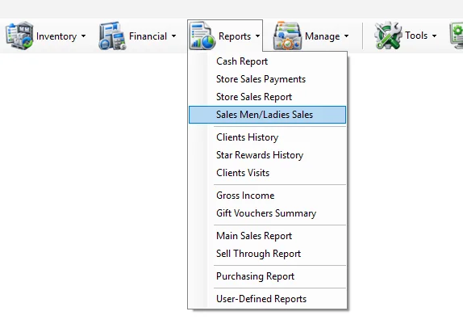
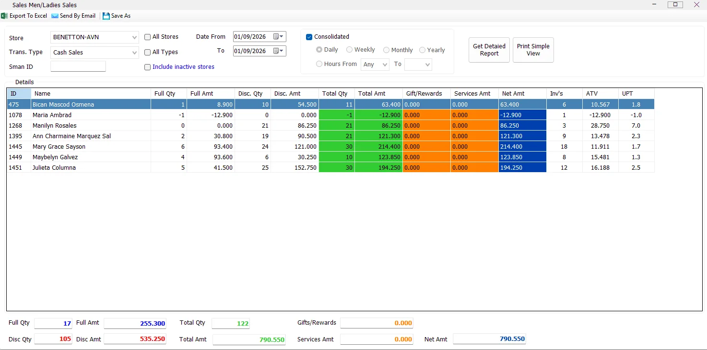
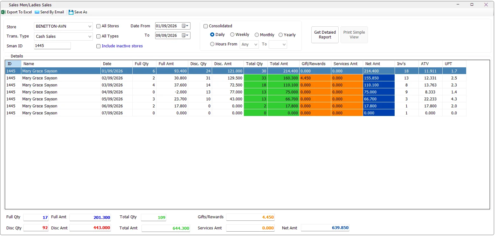

Performance
Who sold the most?
Use Consolidated with the required store and date range, then compare Total Amt, Net Amt, ATV and UPT by salesperson.
The Sales Men/Ladies Sales report measures sales performance by salesperson. It can show a consolidated total for each salesperson or break performance down by day, week, month, year or hour. The report also supports one store or all accessible stores, cash/credit transaction types, a specific salesperson ID, gifts/rewards, services, invoice counts, ATV and UPT.

| Criteria | What it does |
|---|---|
| Store | Limits the report to one store. The list follows the stores available to the logged-in user. |
| All Stores | Includes all stores currently available to the user. The Store selector is disabled while this option is selected. |
| Trans. Type | Selects Cash Sales or Credit Sales. Each selection includes its corresponding returns so the report remains net of returns. |
| All Types | Includes cash sales, credit sales and their returns together. |
| Sman ID | Filters the result to one salesperson ID. Leave blank to include all matching salespeople. |
| Date From / To | Defines the reporting period. |
| Include inactive stores | Loads inactive stores into the Store selection. This option is shown only to users with access to all departments. |
Consolidated is selected by default. IMS combines the complete selected date range and produces a summarized row for each salesperson instead of separating the result by time period.

While Consolidated is selected, the Daily, Weekly, Monthly, Yearly and Hours controls are disabled, and the period columns are hidden.
If All Stores and a specific Sman ID are selected together, IMS can also show the Store column so the selected salesperson's activity can be separated by store.
Clear Consolidated to enable period reporting. IMS then shows a period column and allows the following views:
| View | Result |
|---|---|
| Daily | One row per salesperson and date. |
| Weekly | One row per salesperson and calendar week, displayed as Year - Week. |
| Monthly | One row per salesperson and month/year. |
| Yearly | One row per salesperson and year. |
| Hours | One row per salesperson, date and hour. An optional From/To hour range can restrict the result. |
The Daily view is useful when reviewing one salesperson across several dates. In the example below, Sman ID 1445 is shown day by day with quantities, amounts, rewards, services, invoice count, ATV and UPT.

No separate screenshot is required to use Weekly. Clear Consolidated, select Weekly, choose the date range and run the report. IMS groups the salesperson's results by calendar year and week.
Select Monthly to summarize salesperson performance by month within the selected date range. The same store, transaction type and Sman ID filters continue to apply.
Select Yearly for a high-level salesperson comparison by year.
Select Hours to add Date and Hour to the result. Leave the starting hour as Any to include all hours, or select a From/To range. If the ending hour is earlier than the starting hour, IMS stops the report and asks the user to check the Hours criteria.
| Column | Meaning |
|---|---|
| ID | Salesperson ID. |
| Name | Salesperson name. |
| Store | Shown when required, particularly when All Stores is used with a specific salesperson ID. |
| Date / Week / Month / Year | The selected reporting period when Consolidated is off. |
| Hour | Displayed only in the Hours view. |
| Full Qty | Quantity sold at full price, net of applicable returns. |
| Full Amt | Sales amount for full-price quantity. |
| Disc. Qty | Quantity sold with discount. |
| Disc. Amt | Sales amount for discounted quantity. |
| Total Qty | Full Qty + Disc. Qty. |
| Total Amt | Full Amt + Disc. Amt. |
| Gift/Rewards | Gift and Star Rewards amount allocated to the salesperson's transactions. |
| Services Amt | Service amount associated with the salesperson's transactions. |
| Net Amt | Total Amt - Gift/Rewards - Services Amt. |
| Inv's | Distinct sales transaction/receipt count for the salesperson and selected period. |
| ATV | Average Transaction Value: Total Amt ÷ Inv's. |
| UPT | Units Per Transaction: Total Qty ÷ Inv's. |
The summary area totals the complete result set, not only the currently selected row. It displays Full Qty, Full Amt, Disc Qty, Disc Amt, Total Qty, Total Amt, Gifts/Rewards, Services Amt and Net Amt.
Print Simple View is available only while Consolidated is selected. It prints the simplified salesperson sales summary using the configured IMS report printer and the configured number of copies.
When Consolidated is cleared for Daily, Weekly, Monthly, Yearly or Hourly analysis, the Simple View print button is disabled because those detailed period rows are intended to be reviewed in the grid or exported.
Export To Excel, Send By Email and Save As operate on the generated detail grid. Export and email availability depends on the logged-in user's permissions; Save As follows Excel-export permission.
Save As requires a generated result. If the grid is empty, IMS asks the user to generate a report first.
The Sales Men/Ladies Sales menu is displayed only to users whose IMS policy allows access to salesperson sales reporting. Export to Excel and Send By Email are controlled separately by their report-output permissions.
Use Consolidated with the required store and date range, then compare Total Amt, Net Amt, ATV and UPT by salesperson.
Enter Sman ID, clear Consolidated, choose Daily and run the report.
Select All Stores and enter the salesperson's Sman ID. IMS can show the Store column alongside that salesperson's figures.
Clear Consolidated and choose Hours to compare salesperson activity by date and hour.
The salesperson ID and Name used by this report come from Manage → Sales Men/Ladies. That master also maintains each person's active status, join date and the stores where the employee can sell.
If a Sales Man/Lady is enabled for Can Add Sales, IMS can link the salesperson to an IMS cashier login and synchronize operational store access from the person's Can Sell In assignments.
The Store criteria use records maintained in Manage → Stores. The Store master can also hold a Default Sales Man used by supported transaction workflows.
Services Amt comes from Service Items maintained in Manage → Service Items. This lets salesperson reporting show service value separately from the normal merchandise amount.